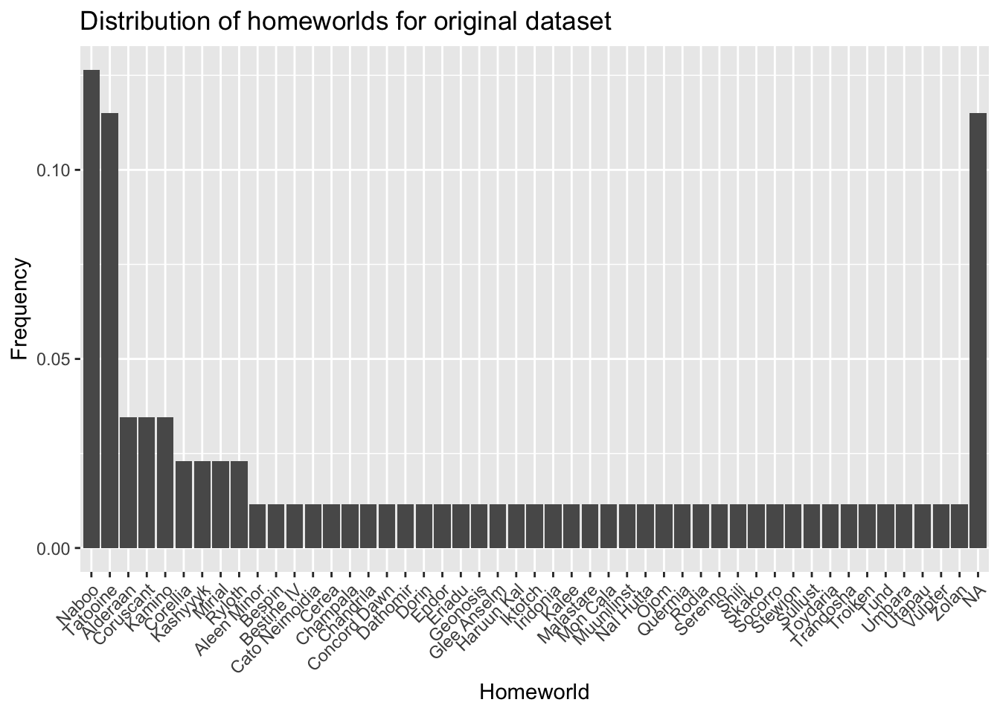
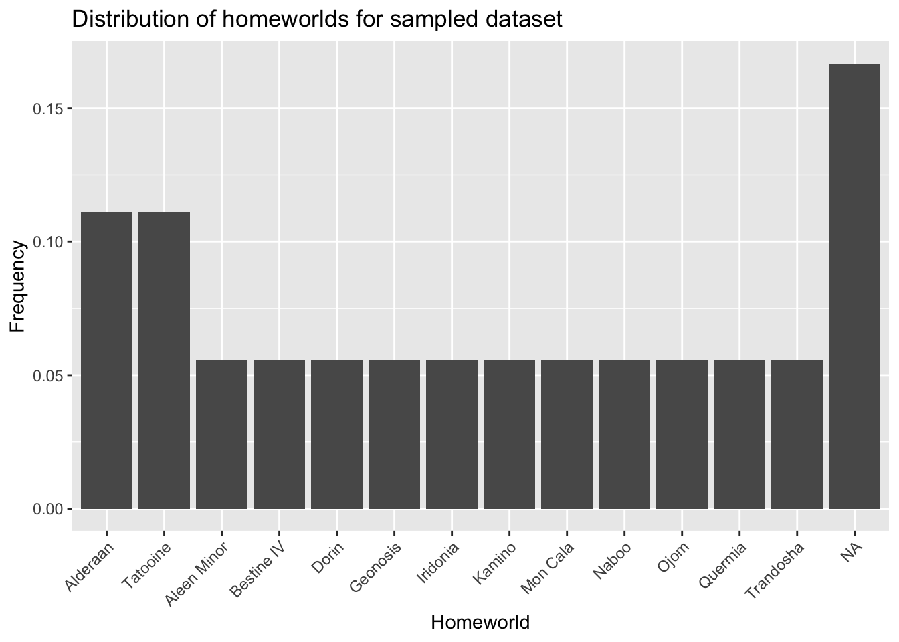

Chapter 15 Sampling objects in a dataset
In this lab activity, we will demonstrate two methods of sampling objects in a dataset:
- Naive random sampling
- Stratified random sampling
Sampling is a common method of dealing with a huge number of objects/observations in a dataset.
15.1 Dependencies and setup
In this activity, we’ll be using the following R packages:
library(tidyverse)We’ll sample from our handy-dandy Star Wars data set:
head(starwars)## # A tibble: 6 × 14
## name height mass hair_…¹ skin_…² eye_c…³ birth…⁴ sex gender homew…⁵
## <chr> <int> <dbl> <chr> <chr> <chr> <dbl> <chr> <chr> <chr>
## 1 Luke Skywal… 172 77 blond fair blue 19 male mascu… Tatooi…
## 2 C-3PO 167 75 <NA> gold yellow 112 none mascu… Tatooi…
## 3 R2-D2 96 32 <NA> white,… red 33 none mascu… Naboo
## 4 Darth Vader 202 136 none white yellow 41.9 male mascu… Tatooi…
## 5 Leia Organa 150 49 brown light brown 19 fema… femin… Aldera…
## 6 Owen Lars 178 120 brown,… light blue 52 male mascu… Tatooi…
## # … with 4 more variables: species <chr>, films <list>, vehicles <list>,
## # starships <list>, and abbreviated variable names ¹hair_color, ²skin_color,
## # ³eye_color, ⁴birth_year, ⁵homeworld15.2 Random sampling
In naive random sampling, we simply randomly sample rows from our dataset. In this example, we’ll sample without replacement: we don’t want to characters more than once in our down-sampled dataset.
sample_proportion <- 0.2 # Down-sample down to just this % of our full data set
sample_size <- ceiling(sample_proportion * nrow(starwars)) # Sample size, round up.We can use slice_sample from the dplyr package to randomly sample star wars characters.
naive_sampled_data <- starwars %>%
slice_sample(
n=sample_size,
replace=FALSE
)
naive_sampled_data## # A tibble: 18 × 14
## name height mass hair_…¹ skin_…² eye_c…³ birth…⁴ sex gender homew…⁵
## <chr> <int> <dbl> <chr> <chr> <chr> <dbl> <chr> <chr> <chr>
## 1 Ackbar 180 83 none brown … orange 41 male mascu… Mon Ca…
## 2 Eeth Koth 171 NA black brown brown NA male mascu… Iridon…
## 3 Darth Vader 202 136 none white yellow 41.9 male mascu… Tatooi…
## 4 Jek Tono P… 180 110 brown fair blue NA male mascu… Bestin…
## 5 Poggle the… 183 80 none green yellow NA male mascu… Geonos…
## 6 Dexter Jet… 198 102 none brown yellow NA male mascu… Ojom
## 7 Bail Prest… 191 NA black tan brown 67 male mascu… Aldera…
## 8 Plo Koon 188 80 none orange black 22 male mascu… Dorin
## 9 Boba Fett 183 78.2 black fair brown 31.5 male mascu… Kamino
## 10 Leia Organa 150 49 brown light brown 19 fema… femin… Aldera…
## 11 Ratts Tyer… 79 15 none grey, … unknown NA male mascu… Aleen …
## 12 Arvel Cryn… NA NA brown fair brown NA male mascu… <NA>
## 13 Roos Tarpa… 224 82 none grey orange NA male mascu… Naboo
## 14 Yarael Poof 264 NA none white yellow NA male mascu… Quermia
## 15 Qui-Gon Ji… 193 89 brown fair blue 92 male mascu… <NA>
## 16 BB8 NA NA none none black NA none mascu… <NA>
## 17 Luke Skywa… 172 77 blond fair blue 19 male mascu… Tatooi…
## 18 Bossk 190 113 none green red 53 male mascu… Trando…
## # … with 4 more variables: species <chr>, films <list>, vehicles <list>,
## # starships <list>, and abbreviated variable names ¹hair_color, ²skin_color,
## # ³eye_color, ⁴birth_year, ⁵homeworldTake a look at naive_sampled_data.
What are some ways that our random sample might not be representative of our larger data set (starwars)?
For example, we can look at the distribution of homeworlds in our original data.
# Get the distribution of homeworlds in full dataset.
orig_homeworlds <- starwars %>%
group_by(
homeworld
) %>%
summarise(
n=n()
) %>%
mutate(
freq = n / sum(n),
) %>%
arrange(
desc(freq)
)
# Get the distribution of homeworlds in the sampled dataset.
sampled_homeworlds <- naive_sampled_data %>%
group_by(
homeworld
) %>%
summarise(
n=n()
) %>%
mutate(
freq = n / sum(n),
) %>%
arrange(
desc(freq)
)Let’s take a look at the distribution of homeworlds from the original dataset:
ggplot(
orig_homeworlds,
aes(
x=reorder(homeworld, -freq),
y=freq
)
) +
geom_bar(stat="identity") +
labs(
x="Homeworld",
y="Frequency",
title="Distribution of homeworlds for original dataset"
) +
theme(
axis.text.x=element_text(angle=45, hjust=1)
)
And now the sampled dataset:
ggplot(
sampled_homeworlds,
aes(
x=reorder(homeworld, -freq),
y=freq
)
) +
geom_bar(stat="identity") +
labs(
x="Homeworld",
y="Frequency",
title="Distribution of homeworlds for sampled dataset"
) +
theme(
axis.text.x=element_text(angle=45, hjust=1)
)
15.2.1 Exercises
- What differences do you notice between the distribution of homeworlds in the original dataset and the sampled dataset?
- How could you modify
slice_sampleto randomly sample, but instead of weighting all rows equally, you weight each row’s likelihood of being included in the sample according to the height attribute? Hint:?slice_sample - Adjust the sample proportion parameter and resample. What happens to the distribution of
speciesas you increase or decrease the sample size? - Read the R code. Identify any lines of code that you don’t understand. Use the documentation to figure out what those lines of code are doing.
15.3 Stratified random sampling
Stratified sampling can be used in cases where there are predefined groupings of objects. In stratified sampling, you enforce the level of representation for each group.
For example, we might want to ensure that each species among Star Wars characters is represented in our sample. There are many ways to implement this, and the particular approach you take will depend on your objective. In this example, I’ll randomly sample each species independently, guaranteeing that at least one character of each species is represented in our sample.
# Grab the set of species represented in our original dataset
species <- levels(as.factor(starwars$species))
# Create an empty data frame that we will store our sample
stratified_sampled_data <- data.frame(
matrix(
ncol=ncol(starwars),
nrow=0,
dimnames=list(NULL,colnames(starwars))
)
)
for (s in species) {
# First, filter down to the species
species_sample <- starwars %>%
filter(
species==s
)
# Calculate sample size, guarantee >= 1
sample_size = max(
ceiling(nrow(species_sample)*sample_proportion),
1
)
# Sample from characters of the current species
species_sample <- species_sample %>%
slice_sample(
n=sample_size,
replace=FALSE
)
# Add sample of this species to larger sample
stratified_sampled_data <- rbind(
stratified_sampled_data,
species_sample
)
}
stratified_sampled_data## # A tibble: 44 × 14
## name height mass hair_…¹ skin_…² eye_c…³ birth…⁴ sex gender homew…⁵
## <chr> <int> <dbl> <chr> <chr> <chr> <dbl> <chr> <chr> <chr>
## 1 Ratts Tyer… 79 15 none grey, … unknown NA male mascu… Aleen …
## 2 Dexter Jet… 198 102 none brown yellow NA male mascu… Ojom
## 3 Ki-Adi-Mun… 198 82 white pale yellow 92 male mascu… Cerea
## 4 Mas Amedda 196 NA none blue blue NA male mascu… Champa…
## 5 Zam Wesell 168 55 blonde fair, … yellow NA fema… femin… Zolan
## 6 R2-D2 96 32 <NA> white,… red 33 none mascu… Naboo
## 7 R5-D4 97 32 <NA> white,… red NA none mascu… Tatooi…
## 8 Sebulba 112 40 none grey, … orange NA male mascu… Malast…
## 9 Wicket Sys… 88 20 brown brown brown 8 male mascu… Endor
## 10 Poggle the… 183 80 none green yellow NA male mascu… Geonos…
## # … with 34 more rows, 4 more variables: species <chr>, films <list>,
## # vehicles <list>, starships <list>, and abbreviated variable names
## # ¹hair_color, ²skin_color, ³eye_color, ⁴birth_year, ⁵homeworld15.3.1 Exercises
- Graph the distribution of species in the original
starwarsdataset and in the stratified sample (just like we did for homeworlds in the naive random sample). What differences do you notice? What might be causing those differences? - We specified a sample proportion of 0.2. Why might the size of our stratified sample differ from the size of our random sample?
- Read the R code. Identify any lines of code that you don’t understand. Use the documentation to figure out what those lines of code are doing.